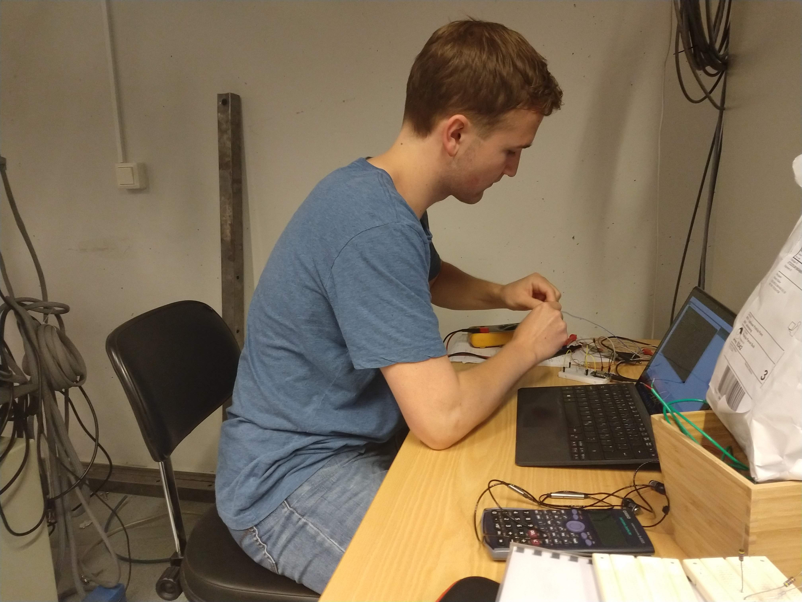

Håvard jobber som forskningsassistent denne sommeren under veileder Justin Wells, som hører til forskningsgruppen QuSpin.
Navn: Håvard Bakke
Studie: Nanoteknologi, med spesialisering i nanoelektronikk.
Årskull: Begynner i 4. klasse etter sommeren
Veileder: Justin Wells på QuSpin

Dette er den første sommeren jeg jobber som forskningsassistent i laboratoriet, og prosjektet jeg jobber med er å sette opp et nytt system som skal hente målt trykk i et vakuumkammer. Dette skal det lages backup av, og lagres på en nettside som viser data fra vakuumkammeret. Dette krever en del programmeringsferdigheter innenfor Webteknologi, i tillegg til kjennskap til arduino. Arduino-programmering gjøres med hjelp av eksisterende kunnskaper i python og C++, mens det å opprette en nettside krever litt nye kunnskaper som jeg har måttet lære meg i løpet av sommeren. Jeg har måttet sette meg inn i html, css og javascript, men det finnes heldigvis mange gode kodeeksempler ute på nettet. Og interesse for programmering ligger til grunn for valget av dette prosjektet, ettersom vi fikk en liste med flere oppgaver som vi kunne velge fra.
Jeg har ikke gjort så mye direkte forskningsarbeid selv, men jeg arbeider jo på labben. Der får jeg se hva de vitenskapelig ansatte gjør og hvilke arbeidsoppgaver som må gjøres. Prosjektet har gitt meg et godt innblikk i en forskers hverdag, og det er svært relevant for studiet mitt ettersom jeg har valgt retningen nanoelektronikk.